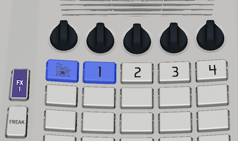

1. Connect the myTRACKS to your computer using a USB cable.
2. Turn off the myTRACKS.
3. Hold down the top two buttons on the left side of the PLAY PAD (drums track and Track 1).
4. Keep pressing the two buttons then tap the on button once. The buttons will glow blue as pictured.

The rest of the upload process will take place on the computer.
1. Click the buttons below in order, starting with “SEARCH FOR MYTRACKS”.
2. As soon as you see “myTRACKS found”, click “CONNECT TO MYTRACKS”.
3. As soon as you see “myTRACKS connected”, click “UPLOAD FILE”.
4. The progress bar will show percentage complete, then “File Upload Complete”.
5. Restart the myTRACKS to start exploring the new sounds.